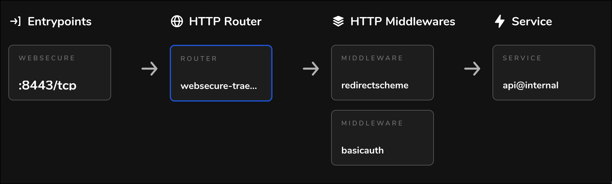

Cloud Computing with EKS: Cluster Setup¶
This series of posts is an opinionated tutorial for setting up production-grade Kubernetes clusters & deployments on AWS 1. It aims to be as detailed and correct as possible and will provide complete pieces of relevant source code.
This tutorial is split into 2 parts. The first part is devoted to creating EKS & supporting infra, and the second part describes Dagster installation.
Introduction¶
In the Data & ML space, we often encounter workloads with high computational requirements. Kubernetes with its near to infinite customization options and scalability is a natural choice for running such workloads.
Kubernetes is a platform for running applications in the cloud. We can use it to dynamically provide compute and to configure our deployments.
We also need a tool to orchestrate the actual jobs running on the compute resources provided by Kubernetes. Dagster is an excellent Jobs & Data Orchestrator with a unique declarative, asset-based programming model. It's an ideal choice for batch processing workloads. Dagster can be deployed on Kubernetes, which enables it to orchestrate data processing at massive scale.
Prerequisites¶
- AWS access with sufficient permissions
- A domain (referred to as
<domain>in the article) managed by AWS Route 53
Goals & Tools¶
On a high level, these are the technical requiremnets for our data processing system:
- Have an auto-scaling Dagster deployment running on Kubernetes. Auto-scaling is important because we don't want to be paying for idle nodes, and we want to spin up a lot of them when processing large amounts of data.
- Leverage cheap Spot instances for up to 90% costs reduction. Spot instances are much cheaper than on-demand instances, but are not reliable and can be shut down at any moment. Workloads using Spot instances should be fault-tolerant, which is usually achieved by techniques such as checkpointing and retries.
- We need secure external access to this deployment. Because OSS Dagster doesn't have built-in authentication, we will provide a Basic Auth wrapper for its Webserver. This simple authentication layer can be later replaced by something more flexible (like OAUTH).
- Have automatic Dagster Branch deployments for Pull Requests. Branch Deployments are incredibly useful for development and speedup software iteration cycles by an order of magnitude.
We will be using various free & Open Source tools in order to satisfy the above requirements 2:
- OpenTofu (open Terraform fork) to create the EKS cluster and other supporting infrastructure
- Karpenter for auto-scaling EC2 (spot) instances
- Cert Manager for getting free SSL certificates from Let's Encrypt
- Traefik as a reverse proxy, ingress controller & simple Basic Auth middleware for Dagster's Webserver
- NodeLocal DNSCache for reducing load on AWS DNS servers (it's actually quite easy to overload them!)
- ArgoCD to deploy Dagster and automatically create Branch Deployments for Pull Requests
Who scales the autoscaler?¶
For all things AWS, we will be using the amazing terraform-aws-modules Terraform modules. They provide pre-configured AWS resources for common use-cases.
Let's start by creating the EKS cluster:
Click to reveal code
data "aws_region" "current" {}
locals {
cluster_name = var.cluster_name
cluster_subdomain = "k8s-${data.aws_region.current.name}-${var.cluster_name}"
tags = var.tags
}
module "eks" {
source = "terraform-aws-modules/eks/aws"
version = "~> 20.0"
cluster_name = local.cluster_name
cluster_version = "1.29"
vpc_id = var.vpc_id
subnet_ids = var.subnet_ids
# map with IAM users/roles and Kubernetes access permissions
access_entries = var.access_entries
create_iam_role = true
cluster_endpoint_public_access = true
cluster_endpoint_private_access = true
cluster_addons = {
coredns = {
most_recent = true # TODO: pin exact version
}
kube-proxy = {
most_recent = true # TODO: pin exact version
before_compute = true
}
vpc-cni = {
most_recent = true # TODO: pin exact version
before_compute = true
}
aws-ebs-csi-driver = {
most_recent = true # TODO: pin exact version
}
amazon-cloudwatch-observability = { # TODO: pin exact version
most_recent = true
}
}
eks_managed_node_groups = {
default = {
instance_types = ["t3.medium"]
min_size = 2
max_size = 10
desired_size = 2
}
}
# https://stackoverflow.com/questions/74687452/eks-error-syncing-load-balancer-failed-to-ensure-load-balancer-multiple-tagge
node_security_group_tags = {
"kubernetes.io/cluster/${local.cluster_name}" = null
}
tags = merge(
local.tags, {
"karpenter.sh/discovery" = local.cluster_name
}
)
}
The terraform code creates a local variable local.cluster_subdomain. We compose it as following: k8s-<region>-<cluster-name>. This is a human-readable sensible default as cluster names are unique per region. We will be assigning k8s-<region>-<cluster-name>.<domain> to Traefik's LoadBalancer later on.
Notice how the cluster only has a single Node Group. This is because we are going to be using Karpenter for node provisioning.
Creating NodePools with Karpenter¶
Karpenter is a feature-rich and easy to use Kubernetes autoscaler. It allows defining NodePools and other objects as Kubernetes Custom Resources via simple YAML. This is beneficial for multiple reasons, and allows doing really interesting (and questionable) stuff like configuring NodePools from application helm values.
While being really great, Karpenter pods can't magically appear in our cluster out of nowhere, so sadly they need an initial NodeGroup to run on. Afterwards, Karpenter will launch additional EC2 instances to join the cluster to satisfy Pod scheduling needs.
Currently, Karpenter only works with AWS EKS, but the project is aiming to support other cloud providers in the future.
Karpenter is aware of Kubernetes well-known labels (such as OS, CPU architecture, ...) and aws-specific labels (such as instance-type, instance-size, ...) is aware of instance pricing, can drain Kubernetes nodes running on spot instances ahead of node termination, and much more. This enables configuring really flexible auto-scaling NodePools.
Let's install Karpenter to our cluster and add a default NodePool. We will be using the community kubectl Terraform provider to create Karpenter's Custom Resources (CRs), since the other official provider - kubernetes - does not properly support CRs, so we are left with whatever actually works.
Click to reveal code
# this module creates supporting infrastructure for Karpenter
# like IAM and spot instances info SQS queue
# but doesn't deploy Karpenter itself
module "karpenter" {
source = "terraform-aws-modules/eks/aws//modules/karpenter"
version = "~> 20.8.5"
cluster_name = module.eks.cluster_name
irsa_oidc_provider_arn = module.eks.oidc_provider_arn
# Used to attach additional IAM policies to the Karpenter node IAM role
enable_irsa = true # TODO: uncomment this
enable_pod_identity = true
node_iam_role_additional_policies = {
AmazonSSMManagedInstanceCore = "arn:aws:iam::aws:policy/AmazonSSMManagedInstanceCore"
}
tags = local.tags
}
# here we actually install Karpenter with helm
resource "helm_release" "karpenter" {
namespace = "karpenter"
create_namespace = true
name = "karpenter"
repository = "oci://public.ecr.aws/karpenter"
chart = "karpenter"
version = "0.36.0"
wait = true
values = [
<<-EOT
settings:
clusterName: ${module.eks.cluster_name}
clusterEndpoint: ${module.eks.cluster_endpoint}
interruptionQueue: ${module.karpenter.queue_name}
serviceAccount:
annotations:
eks.amazonaws.com/role-arn: ${module.karpenter.iam_role_arn}
EOT
]
}
# add a default NodeClass
resource "kubectl_manifest" "karpenter-node-class-default" {
yaml_body = <<-YAML
apiVersion: karpenter.k8s.aws/v1beta1
kind: EC2NodeClass
metadata:
name: default
namespace: karpenter
spec:
amiFamily: AL2
role: ${module.karpenter.node_iam_role_name}
subnetSelectorTerms:
- tags:
karpenter.sh/discovery: ${module.eks.cluster_name}
securityGroupSelectorTerms:
- tags:
karpenter.sh/discovery: ${module.eks.cluster_name}
tags:
karpenter.sh/discovery: ${module.eks.cluster_name}
YAML
depends_on = [
helm_release.karpenter # need to add this explicit dependency
]
}
# add a default NodePool
resource "kubectl_manifest" "karpenter-node-pool-default" {
yaml_body = <<-YAML
apiVersion: karpenter.sh/v1beta1
kind: NodePool
metadata:
name: default
namespace: karpenter
spec:
template:
spec:
nodeClassRef:
name: ${kubectl_manifest.karpenter-node-class-default.name}
requirements:
- key: kubernetes.io/arch
operator: In
values: ["amd64"]
- key: kubernetes.io/os
operator: In
values: ["linux"]
- key: karpenter.sh/capacity-type
operator: In
values: ["on-demand"]
- key: karpenter.k8s.aws/instance-category
operator: In
values: ["c", "m", "r", "t"]
limits:
cpu: 100
disruption:
consolidationPolicy: WhenUnderutilized
expireAfter: 720h
YAML
}
resource "kubectl_manifest" "karpenter-node-class-deeplearning" {
yaml_body = <<-YAML
apiVersion: karpenter.k8s.aws/v1beta1
kind: EC2NodeClass
metadata:
apiVersion: karpenter.k8s.aws/v1beta1
kind: EC2NodeClass
metadata:
This is how we can add a NodePool for spot instances:
...
spec:
template:
spec:
requirements:
- key: karpenter.sh/capacity-type
operator: In
values: ["spot"]
...
if the requirement karpenter.sh/capacity-type is set to math both "on-demand" and "spot", then Karpenter will prefer spot instances and automatically fallback to on-demand during shortages.
GPU nodes¶
If you are doing machine learning, chances are you will need GPUs in your cluster!
Here is how we can setup a GPU-compatible EC2NodeClass with Karpenter:
Click to reveal code
name: deeplearning
namespace: karpenter
spec:
amiFamily: AL2
amiSelectorTerms:
- name: amazon-eks-gpu-node-${module.eks.cluster_version}-v20240703 # optimized gpu ami
role: ${module.karpenter.node_iam_role_name}
# increase static storage size to handle large DL images
blockDeviceMappings:
- deviceName: /dev/xvda
ebs:
volumeSize: ${var.volume_size_gb} # set to something like 100Gi
volumeType: gp3
iops: 10000
deleteOnTermination: true
throughput: 125
subnetSelectorTerms:
- tags:
karpenter.sh/discovery: ${module.eks.cluster_name}
securityGroupSelectorTerms:
- tags:
karpenter.sh/discovery: ${module.eks.cluster_name}
tags:
karpenter.sh/discovery: ${module.eks.cluster_name}}
disruption:
consolidationPolicy: WhenUnderutilized
expireAfter: 720h
YAML
}
You can explore EKS AMI releases for more images.
Now, let's reference this EC2NodeClass to create a NodePool:
...
spec:
nodeClassRef:
name: ${kubectl_manifest.karpenter-node-class-deeplearning.name}
requirements:
- key: kubernetes.io/arch
operator: In
values: ["amd64"]
- key: kubernetes.io/os
operator: In
values: ["linux"]
- key: karpenter.k8s.aws/instance-gpu-count
operator: Gt
values: ["0"]
- key: karpenter.k8s.aws/instance-gpu-manufacturer
operator: In
values: ["nvidia"]
...
The requirements field here is really versatile and can be changed according to specific needs.
DNS caching¶
The last component to complete the hyper scaling setup is NodeLocal DNS Cache. It's really important to set it up, otherwise launching more than ~500 pods will result in frequent Temporary Name Resolution Failure when accessing AWS services such as S3 or RDS.
resource "helm_release" "node-local-dns" {
namespace = "kube-system"
name = "node-local-dns"
repository = "https://charts.deliveryhero.io"
chart = "node-local-dns"
version = "2.0.9"
wait = true
}
I haven't included supporting Terraforms files (providers.tf, variables.tf and outputs.tf) above since they are self-explanatory.
Now, let's get to the ingress LoadBalancer setup.
Cloud District¶
We are aiming to expose (securely) our Kubernetes services to the outside world, and we are not running away from Load Balancers, various middlewares, autentication, route management, SSL certificates, and so on. Setting all of this in automated fasion for Branch Deployments might get really complicated.
Traefik and Cert Manager are the two mainstream free and open source Kubernetes applications often used to solve this kind of problems. I will give a brief explanation below, but the reader is welcome to dive into their documentation.
Traefik is a reverse proxy which can be deployed with it's own Load Balancer. It can then route traffic from this Load Balancer to other Kubernetes services. It can be used to inject various useful middlewares which can do stuff like https -> http redirect, rate limiting, basic auth, modify request paths, etc. The full list can be found here. It also allows to automatically provision SSL certificates and supports free services such as Lets Encrypt. It allows doing all of this via Kubernetes CRs. Load Balancers can get quite expensive, and Traefik allows easily using a single Load Balancer for all your services. It also has a great dashboard!
While Traefik can generate SSL certificates out of the box, we will be using a separate solution for that - Cert Manager. This way we are not too reliant on Traefik, and Cert Manager is actually more versatile (since issuing certificates is it's primary job).
Both Traefik and Cert Manager can be deployed without Terraform, but using Terraform allows automating the registration of the CNAME record for Traefik's Load Balancer, which is a crusial step when provisioning new EKS clusters.
Seems like a match made in ~~the cloud~~ heaven!
Let's start by installing Traefik.
Click to reveal code
resource "helm_release" "traefik" {
namespace = "traefik"
create_namespace = true
name = "traefik"
repository = "https://traefik.github.io/charts"
chart = "traefik"
version = "27.0.2"
wait = true
depends_on = [module.eks]
values = [<<-YAML
ingressClass:
enabled: true
isDefaultClass: true
fallbackApiVersion: v1
ingressRoute:
dashboard:
enabled: false
service:
name: traefik
annotations:
# create an external AWS LoadBalancer for this service
service.beta.kubernetes.io/aws-load-balancer-type: nlb
globalArguments:
- "--api.insecure=true"
YAML
]
}
data "kubernetes_service" "traefik" {
metadata {
name = "traefik"
namespace = "traefik"
}
depends_on = [helm_release.traefik]
}
# route subdomain.domain to the AWS LoadBalancer (just in case)
resource "aws_route53_record" "traefik" {
zone_id = var.zone_id
name = local.cluster_subdomain
type = "CNAME"
ttl = "300"
records = [data.kubernetes_service.traefik.status.0.load_balancer.0.ingress.0.hostname]
}
# route all web requests such as x.subdomain.domain to the AWS LoadBalanacer
resource "aws_route53_record" "traefik-wildcard" {
zone_id = var.zone_id
name = "*.${local.cluster_subdomain}"
type = "CNAME"
ttl = "300"
records = [data.kubernetes_service.traefik.status.0.load_balancer.0.ingress.0.hostname]
}
We installed the Traefik helm chart into traefik namespace. We annotated the Service with service.beta.kubernetes.io/aws-load-balancer-type: nlb to create an AWS external LoadBalancer, and created CNAME DNS records in AWS Route 53 to route web requests to our domain to this LoadBalancer.
Notice how the chart has the default dashboard's IngressRoute disabled. Instead, we are going to create a custom one. We are going to need an SSL certificate to secure the dashboard with HTTPS. Let's install Cert Manager to issue this certificate:
Click to reveal code
# this will create a role wich will be automatically assumed by
# pods running in cert-manager namespace under cert-manager Kubernetes Service Account
module "eks-irsa-cert-manager" {
source = "terraform-aws-modules/iam/aws//modules/iam-role-for-service-accounts-eks"
role_name = "cert-manager-${local.cluster_subdomain}"
attach_cert_manager_policy = true
oidc_providers = {
eks = {
provider_arn = module.eks.oidc_provider_arn
namespace_service_accounts = ["cert-manager:cert-manager"]
}
}
}
resource "helm_release" "cert-manager" {
namespace = "cert-manager"
create_namespace = true
name = "cert-manager"
repository = "https://charts.jetstack.io"
chart = "cert-manager"
version = "1.14.5"
wait = true
values = [<<-YAML
installCRDs: true
serviceAccount:
name: cert-manager # make sure to pin the Service Account name for IRSA to work
annotations:
# specify the role to assume
eks.amazonaws.com/role-arn: ${module.eks-irsa-cert-manager.iam_role_arn}
# important for route53
securityContext:
fsGroup: 1001
extraArgs:
- --enable-certificate-owner-ref=true
- --dns01-recursive-nameservers-only
- --dns01-recursive-nameservers=8.8.8.8:53,1.1.1.1:53
podDnsPolicy: "None"
podDnsConfig:
nameservers:
- "1.1.1.1"
- "8.8.8.8"
YAML
]
depends_on = [module.eks]
}
# create a ClusterIssuer for DNS-01 challange
resource "kubectl_manifest" "clusterIssuer-letsencrypt-prod-dns01" {
yaml_body = <<-YAML
apiVersion: cert-manager.io/v1
kind: ClusterIssuer
metadata:
name: letsencrypt-prod-dns01
namespace: cert-manager
spec:
acme:
email: "${var.acme_email}"
server: "https://acme-v02.api.letsencrypt.org/directory"
privateKeySecretRef:
name: "letsencrypt-prod-dns01" # Secret resource that will be used to store the account's private key.
solvers:
- dns01:
route53:
region: ${var.route_53_region}
hostedZoneID: ${var.hosted_zone_id}
selector:
dnsZones:
- '${local.cluster_subdomain}.${var.domain}'
YAML
depends_on = [
helm_release.cert-manager
]
}
We installed the cert-manager Helm chart into cert-manage namespace and created a ClusterIssuer for the DNS-01 challange. This challenge requires creating a given TXT record for the claimed domain, so cert-manager's pod will need access to certain Route 53 policies in order to create this record on Let's Enctrypt's demand. This is covered by creating an IAM role for cert-manager and providing the role's name as Kubernetes Service Account annotation.
Now, we can continue with Traefik Dashboard setup:
Click to reveal code
# SSL certificate for Traefik's Dashboard UI
resource "kubectl_manifest" "certificate-traefik-dashboard" {
yaml_body = <<-YAML
apiVersion: cert-manager.io/v1
kind: Certificate
metadata:
name: traefik-dashboard-${kubectl_manifest.clusterIssuer-letsencrypt-prod-dns01.name}
namespace: traefik
spec:
secretName: traefik-dashboard-tls-${kubectl_manifest.clusterIssuer-letsencrypt-prod-dns01.name}
dnsNames:
- "traefik.${local.cluster_subdomain}.${var.domain}"
issuerRef:
kind: ClusterIssuer
name: ${kubectl_manifest.clusterIssuer-letsencrypt-prod-dns01.name}
YAML
}
# password for the dashboard's Basic Auth
resource "random_password" "traefik-dashboard" {
length = 16
override_special = "<+)"
}
resource "aws_secretsmanager_secret" "traefik-dashboard" {
name = "traefik-dashboard-${local.cluster_subdomain}"
description = "Traefik Dashboard credentials for https://traefik.${local.cluster_subdomain}.${var.domain}/dashboard/"
tags = local.tags
}
# store the password as ASM secret
resource "aws_secretsmanager_secret_version" "traefik-dashboard" {
secret_id = aws_secretsmanager_secret.traefik-dashboard.id
secret_string = jsonencode({
user = "admin",
password = random_password.traefik-dashboard.result
})
}
# store the dashboard password inside Kubernetes
resource "kubectl_manifest" "secret-traefik-dashboard-basic-auth-creds" {
yaml_body = <<-YAML
apiVersion: v1
kind: Secret
metadata:
name: traefik-dashboard-basic-auth-creds
namespace: traefik
type: kubernetes.io/basic-auth
stringData:
username: admin
password: ${random_password.traefik-dashboard.result}
YAML
depends_on = [
helm_release.traefik
]
}
# create a middleware for dashboard's Basic Auth
resource "kubectl_manifest" "middleware-traefik-dashboard-basic-auth" {
yaml_body = <<-YAML
apiVersion: traefik.containo.us/v1alpha1
kind: Middleware
metadata:
name: traefik-dashboard-auth
namespace: traefik
spec:
basicAuth:
secret: ${kubectl_manifest.secret-traefik-dashboard-basic-auth-creds.name}
YAML
}
# create a middleware to redirect HTTP requests to HTTPS
resource "kubectl_manifest" "middleware-https-redirectscheme" {
yaml_body = <<-YAML
apiVersion: traefik.containo.us/v1alpha1
kind: Middleware
metadata:
name: https-redirectscheme
namespace: traefik
spec:
redirectScheme:
permanent: true
scheme: https
YAML
}
# create a route for Traefik
# this route will send all requests starting by traefik.subdomain.domain/dashboard/
# to the Traefik Dashboard Kubernetes service
# and insert the above middlewares into the route
resource "kubectl_manifest" "ingressRoute-traefik-dashboard" {
yaml_body = <<-YAML
apiVersion: traefik.containo.us/v1alpha1
kind: IngressRoute
metadata:
name: traefik-dashboard
namespace: traefik
spec:
entryPoints:
- web
- websecure
routes:
- match: Host(`traefik.${local.cluster_subdomain}.${var.domain}`) && (PathPrefix(`/dashboard`, `/dashboard/`) || PathPrefix(`/api`, `/api/`))
kind: Rule
services:
- name: api@internal
kind: TraefikService
middlewares:
- name: ${kubectl_manifest.middleware-https-redirectscheme.name}
- name: ${kubectl_manifest.middleware-traefik-dashboard-basic-auth.name}
tls:
secretName: traefik-dashboard-tls-${kubectl_manifest.clusterIssuer-letsencrypt-prod-dns01.name}
YAML
}
First, we create a Certificate - a CR provided by Cert Manager - claiming to own the domain traefik.${local.cluster_subdomain}.${var.domain}. Once the Certificate CR is created in Kubernetes, Cert Manager's Controller pod will notice it and start the domain verification process agsinst Let's Encrypt by using the DNS-01 challenge. Let's Encrypt will give Cert Manager a secret token and ask it to expose it via a TXT DNS record. Cert Manager will create this AWS Route 53 record, thus proving actual domain ownership to Let's Encrypt, and the Certificate will be issued and stored in a corresponding Kubernetes Secret. Note that Cert Manager supports multiple other DNS providers other than Route 53.
We then reference this Secret in the IngresRoute - a CR provided by Traefik. We also create and reference a bunch of supporting resources, such as Basic Auth middleware, and store the password for it in AWS Secrets Manager.
Phew! After running tofu apply, a bit of patience (and possible tears if something goes wrong), we should be able to:
- inspect the created AWS Secrets Manager secret for Traefik Dashboard to retrive the Traefik Dashboard password
- access the Traefik Dashboard at
https://traefik.k8s-<region>-<cluster>.<domain>/dashboard/(the training slash is important)
The dashboard allows inspecting the created routes for more details:

Wrapping it up¶
In this first part of our tutorial, we have laid a solid foundation by setting up a production-ready EKS cluster on AWS. We have configured essential components such as Karpenter for auto-scaling, NodeLocal DNS Cache for reliable DNS resolution, and Traefik with Cert Manager for secure external access. This setup ensures that our infrastructure is both scalable and secure, ready to handle high computational workloads typical in Data and ML applications.
In the next chapter, we will delve into the installation and configuration of ArgoCD, a powerful GitOps continuous delivery tool for Kubernetes. ArgoCD will enable us to manage our Kubernetes applications declaratively, ensuring consistent and automated deployment workflows, specifically for Branch Deployments. We will then use ArgoCD to deploy Dagster.